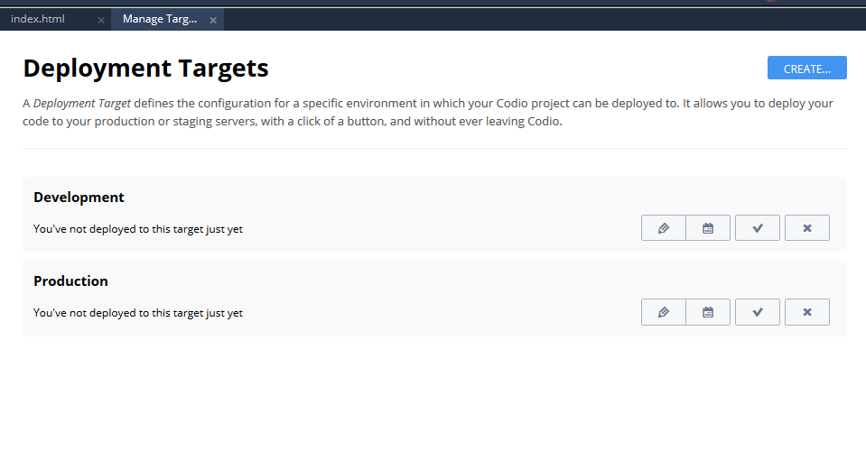
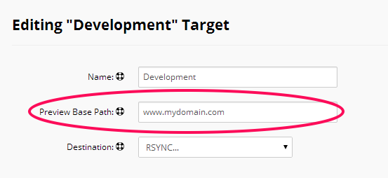
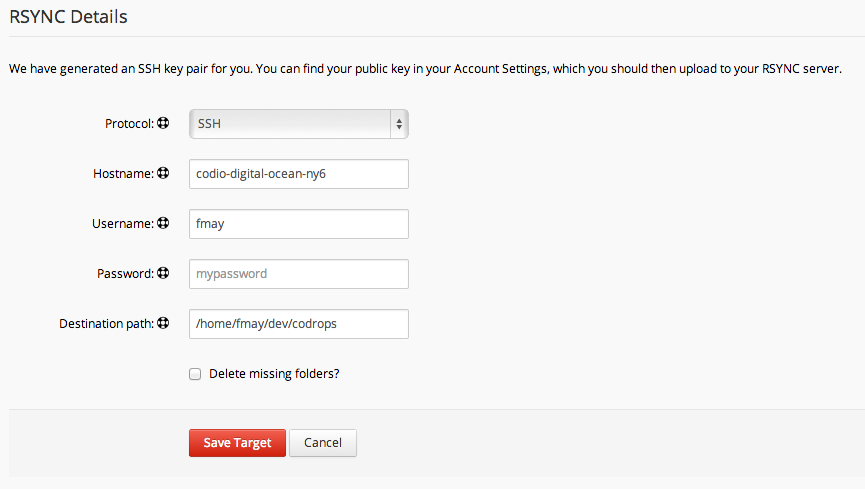
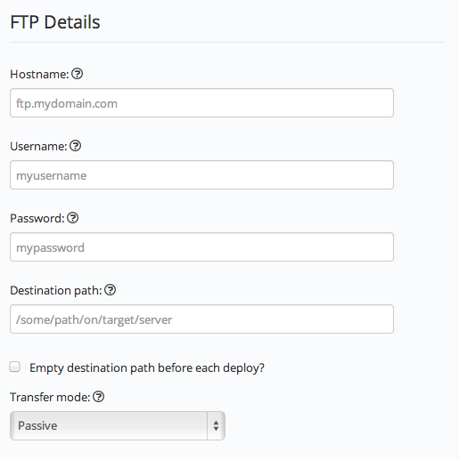
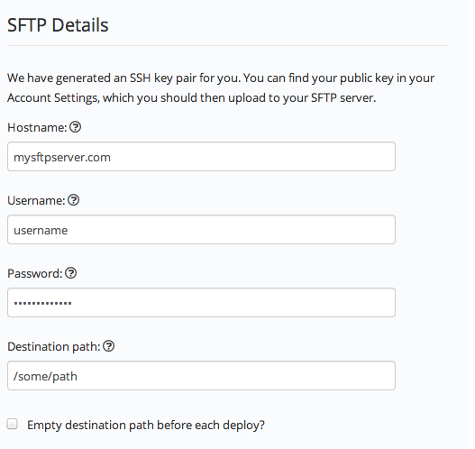
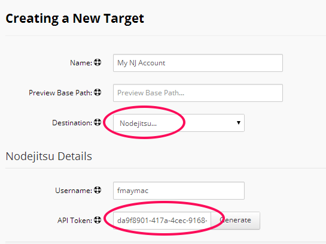
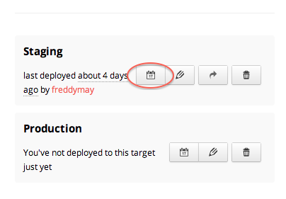
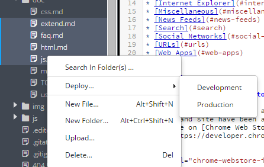

IDE Tools¶
Deployment¶
You do not to need to deploy when you are developing your project. Front-end code is automatically served up over Port 80. Access to back-end code (PHP, Ruby etc.) is done by accessing your Box.
You can deploy from the command line (Tools->Terminal menu), but Codio has a great Deployment Manager that lets you deploy all or any part of your project, with a single click ,to a custom ‘deployment target’. We support deployment to the following platforms.
Create/manage a target¶
The Manage Targets options are accessed via Tools > Deployment > Manage Targets menu. All Deployment dialogs will be displayed in the currently active Panel.
If you have not yet created any deployment targets then you will be prompted to create one.

In the Deployment Targets dialog, you can:
list all defined deployment targets
modify existing targets
create new targets
Destination¶
The Destination drop down specifies the type of the target you are deploying to.
Base path field¶
You will notice that all deployment targets have a Preview Base Path field.

It is important to complete this field for all target types involving remote servers so that the Preview option knows how to access your project once deployed.
For example, you might deploy to a remote server at a folder location /home/fmay/www. Accessing this application via a browser, however, depends on how you configure your remote web server.
So it could be http://123.456.789 or fmay.mydomain.com is the correct location.
Please see the Preview section for more information.
Public keys for remote servers¶
When you are setting up a remote server, Codio can automatically install the Codio public key on your remote server, which saves a tedious manual process.
You can copy a key from the Codio > Account dialog as described here
You can set up an SSH Connection and use the Connection Manager to do the same thing.
Terminal access to remotes¶
If you are working with remote servers, you may find it useful to be able to SSH into your remote server.
Codio supports the ability to open an SSH terminal in a Codio tab. Click here for further details.
Deploying to a target¶
There are three ways to deploy projects.
Right Click in the file tree¶
You can deploy an individual file or folder by right-clicking in the file tree.
Command Line¶
You can use the command line directly but you can also add your custom deployment actions by modifying the Run Menu.
Rsync target type¶
Rsync is a great way of working with remote servers. It behaves much the same as the SFTP deployment type but rather than deploying all files, it deploys only files that have changed.
You can use a password and/or a public key for authentication.

Base Path¶
We recommend you set the base path field for remote servers as described here. This will be useful when using the Preview feature.
Public Key Authentication¶
Codio auto-generates a public key that is uniquely associated with your user account. You can find this public key in the User Settings dialog. You should make sure that this public key is added to your remote server.
Protocol¶
There are two options available
SSH : (recommended) uses an SSH connection to transfer
RSYNC Daemon : this requires you to set up an rsync daemon on the remote server. This is a more complex procedure and so should generally be avoided.
Specifying a Port¶
If you want to override the default SFTP port (22) then you can add the port number to the domain name as shown below
`
mydomain.com:1234
`
User Name¶
You will need to supply a valid user name for your remote server regardless of the authentication method.
Password Authentication¶
If you are using a public key then you can leave the password field empty.
If you do not want to use a public key, then you will need to use a password for authentication. Simply provide the details in the Codio dialog.
Delete Missing Folders¶
This removes any folders from the remote server that are not present in the Codio project.
FTP target type¶
The FTP target type allows you to deploy to any FTP server. You supply the usual FTP access details.

Base Path¶
We recommend you set the base path field for remote servers as described here. This will be useful when using the Preview feature.
Specifying a Port¶
If you want to override the default FTP port (21) then you can add the port number to the domain name as shown below
`
mydomain.com:1234
`
Transfer Mode¶
FTP can operate in ‘Active’ or ‘Passive’ mode. Codio will attempt to connect in passive mode by default. If it fails, then it will automatically try active mode. If that fails then you will get an error.
However, if you get an error then try changing the setting to Active. This will ensure that Codio will only try to connect in active mode without a risk of confusing the target server.
SFTP target type¶
The SFTP target type allows you to deploy to any SFTP server. You can use a password and/or a public key for authentication.

Base Path¶
We recommend you set the base path field for remote servers as described here. This will be useful when using the Preview feature.
Public Key Authentication¶
Codio auto-generates a public key that is uniquely associated with your user account. You can find this public key in the User Settings dialog. You should make sure that this public key is added to your remote server.
Specifying a Port¶
If you want to override the default SFTP port (22) then you can add the port number to the domain name as shown below
`
mydomain.com:1234
`
User Name¶
You will need to supply a valid user name for your remote server regardless of the authentication method.
Password Authentication¶
If you are using a public key then you can leave the password field empty.
If you do not want to use a public key, then you will need to use a password for authentication. Simply provide the details in the Codio dialog. You can use both a public key and a password if you like.
Empty Destination Path¶
Be very careful when checking this box. It will brutally remove all content from specified location on the remote server before the deploy starts.
Nodejitsu target type¶
Nodejitsu is a high quality third party Node.js production platform, so we built a dedicated deployment target that makes life as easy as possible.
You will need to sign up for a Nodejitsu account before you use it.

Select Nodejitsu from the Destination drop down and then make sure you either provide an API Token in the highlighted field or just press the Generate button and we’ll create one for you.
Base Path¶
We recommend you set the base path field for remote servers as described here. This will be useful when using the Preview feature.
That’s all you will need to do. You’re now ready to deploy.
Git target type¶
The Git target type allows you to deploy to any remote Git server. You supply the usual Git access details.
If you prefer, you can deploy to any remote Git server using the command line. Simply access your Box Terminal. .
Existing Remote¶
If you imported your project from a remote Git repo or used git add remote from the command line, you will see existing remotes listed in the Remote dropdown box and you can select it.
Adding a Remote¶
You can add a new remote by selecting Add remote … from the dropdown. You can then enter your remote details.
Committed Files¶
Codio will only do the equivalent of git push remote-name current-branch and so you need to have staged and committed your files first from the Command Line.
Deployment history¶
Each time you do a deploy, a history entry is created so you have a full record of deploys and who did them.

If you have not selected any specific targets, then all deploys across all targets will be shown. If you select the history button for a specific target, then the history for that specific target is shown.
Deploying specific files & folders¶
If you are using a 3rd party hosting provider that does not support RSYNC (the recommended approach), then you can avoid Codio deploying your entire project by only deploying the files or folders that you specify.
Select any files and folders from the file tree and then use the right-click menu to deploy them.

All defined deployment targets will be listed in the submenu. Click the target you want to deploy to.